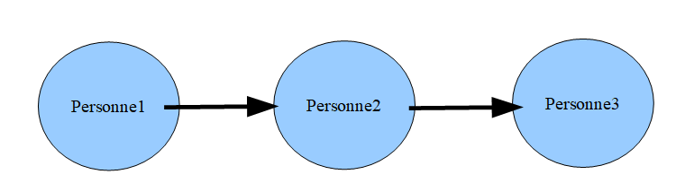

Le mécanisme RPC permet à une application de faire appel à une procédure d'une autre application, généralement située sur une machine distante.
Illustrons ce mécanisme à l'aide d'un exemple avec l'appel de procédure classique au sein d'une unique application :
public class Exemple
{
public int addition(int nb1, int nb2)
{
return nb1+nb2 ;
}
public static void main(String[] args)
{
Exemple ex = new Exemple() ;
System.out.println(« res= »+ex.addition(3,5)) ;
}
}Dans cet exemple :
Pour faire évoluer ce modèle d'invocation vers le mécanisme RPC, il faut disposer de deux applications :
Désormais, le fonctionnement sera le suivant :
Il faut noter les choix suivants :
Détails des tâches réalisées par la souche :
Détails des tâches réalisées par le skeleton:
L'un des principaux problèmes est la sérialisation/désérialisation: il faut pouvoir gérer différentes machines (OS différents, big et little endian), différents langages (C++, Java, …), …
La sérialisation des données consiste à transformer un ensemble complexe de paramètres en un flux d'octets qui pourra être transporté d'une machine A vers une machine B, ou sauvegardé dans un fichier.
Autres termes :
On distingue deux types de sérialisation :
Dans le cas auto descriptif, la consommation d'espace est plus importante, mais la désérialisation est plus facile à réaliser.
Dans la suite, nous allons voir les techniques élémentaires de sérialisation pour les codage des champs de bases
Exemple : addition(int a, int b)Sérialization : écriture de 4 octets pour A, 4 octets pour B
Désérialisation : lecture en sens inverse
Problème potentiel : endianness
Exemple : saveContact(String nom, String prenom)Le nom et le prenom sont supposés être sur 32 caractères, donc transmission de 64 octets avec par exemple des espaces ou des \0 à la fin
JEANxxxxxxxxxxxxxxxxxDUPONTxxxxxxxxxxxxxxxxxxx
Exemple de cas d'utilisation : driver de base de données
Exemple : addition(int a, int b)Dans ce cas, on peut utiliser des séparateurs comme un espace :
12 espace 3 espace
Exemple : validerContact(String nom, String prenom)Dans ce cas, le séparateur est difficile à choisir : il existe toujours un risque que celui ci soit présent dans les chaînes nom ou prénom
TLV : Type Length Value
Dans ce format, on transmet le type de la variable sur un octet, la longueur de la variable sur 4 octets et sa valeur sur
Exemple : validerContact(String nom, String prenom, int age)S 0004 JEAN S 0006 DUPONT I 0002 23
Exemple d'utilisation : SNMP
Exemple
{"menu": {
"id": "file",
"value": "File",
"popup": {
"menuitem": [
{"value": "New", "onclick": "CreateNewDoc()"},
{"value": "Open", "onclick": "OpenDoc()"},
{"value": "Close", "onclick": "CloseDoc()"}
]
}
}}
Par contre, le développeur devra bien veiller à échapper les caractères interdits dans les chaînes (en particulier les « )
Dans ce cas, nous utiliserons la notation classique avec les balises XML
<menu id="file" value="File">
<popup>
<menuitem value="New" onclick="CreateNewDoc()" />
<menuitem value="Open" onclick="OpenDoc()" />
<menuitem value="Close" onclick="CloseDoc()" />
</popup>
</menu>Par contre, le développeur devra bien veiller à échapper les caractères interdits dans les chaînes nom et prénom (en particulier les chevrons).
Considérons la classe
public class Droite
{
int x1 ;
int y1 ;
int x2 ;
int y2 ;
}et la méthode distante
isParallele(Droite d1, Droite d2)Pour la sérialisation de l'objet, il suffit de sérialiser les champs dans l'ordre de la classe
x1 y1 x2 y2, en utilisant une des techniques élémentaires vues auparavant
Considérons une liste chaînée contenant des personnes
struct Person
{
char * firstname ;
char * lastname ;
int age ;
struct Person * next ;
} ;et la fonction
int sommeDesAges(struct Personn * list)La sérialisation doit être alors récursive :
Par contre dans le cas de la fonction
boolean sameAge(struct Personn * p1, struct Personn * p2)
La sérialisation récursive sur la valeur next n'est pas optimale : on transmet complètement la liste deux fois.
Considérons un autre exemple avec une liste doublement chaînée :
struct Person
{
char * firstname ;
char * lastname ;
int age ;
struct Person * previous;
struct Person * next ;
} ;
et la fonction
int sommeDesAges(struct Personn * list)La sérialisation récursive des deux valeurs (next et previous) aboutit à une boucle infinie dans le programme
Le problème est identique avec les références croisées.
Il existe une solution dans le monde objet : la sérialisation binaire native (voir paragraphe suivant).
Un framework de sérialisation apporte les outils nécessaires pour sérializer et désérializer des structures complexes. Une tel framework peut être :
Protocol Buffers est une technologie de serialisation développée par Google, multi langage. Google utilise Protocol Buffers la quasi-totalité de ses protocoles RPC internes et formats de fichiers.
You write a .proto file like this:
message Person {
required int32 id = 1;
required string name = 2;
optional string email = 3;
}Then you compile it with protoc, the protocol buffer compiler, to produce code in C++, Java, or Python.
Le langage Java propose un mécanisme natif pour la sérialisation des objets. Ce mécanisme conserve la liste de tous les objets qui ont été sérialisés et attribue pour chacun un numéro.
Un même objet n'est jamais sérialisé deux fois.
JSON est un format concurrent (ou complémentaire) à XML. Lisez la RFC associée :
http://tools.ietf.org/html/rfc4627
AJAX : Asynchronous JavaScript and XML
AJAJ ?
Un framework RPC contient :
Un framework RPC peut être :
RMI est un framework RPC développé en 1999.
Il se révèle très lourd à l'usage, il est aujourd'hui peu utilisé. Il est basé sur la sérialisation JAVA.
REST est basé sur le protocole HTTP
Les paramètres d'entrée du service sont compris dans l'URL
Le retour est dans un format JSON ou XML
Exemple 1 : le service REST de wikipedia
https://fr.wikipedia.org/w/api.php?action=query&titles=Mars&prop=extracts&exchars=500&explaintext&utf8&format=jsonRésultat :
{"batchcomplete":"",
"query":{"pages":{"1962":{"pageid":1962,"ns":0,"title":"Mars",
"extract":"Mars est originellement le nom du dieu de la guerre dans la mythologie romaine. De cela proviennent plusieurs noms :\n\nplanète Mars, quatrième planète du système solaire.\nmois de mars, troisième mois de l'année dans les calendriers occidentaux.Mars peut aussi faire référence à :\n\n\n== Anthroponyme ==\n\n\n=== Prénom ===\nMars de Nantes (VIe siècle), évêque de Nantes ;\nMars de Royat ou Martius (c. 527), ermite puis abbé à Royat ;\nMars Di Bartolomeo (1952 - ), homme politique luxembourgeois,\nMars Simard, fondateur…"}}}}Exemple 2: Google Map Web Services
Le retour est dans un format JSON ou XML
gRPC est un framework RPC (Remote procedure call) open source initialement développé par Google. Il utilise le protocole HTTP/1.1 ou HTTP/2 pour le transport, Protocol Buffers comme langage de description d'interface (IDL : interface description language).